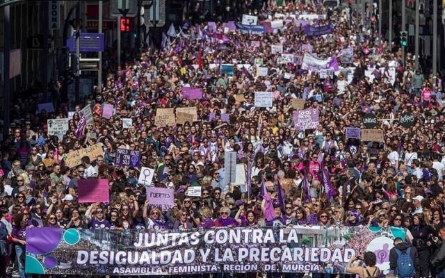
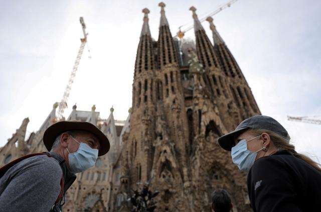

新冠如何在一周之内“闪袭”西班牙
原文链接 备份链接 2020年3月7日，西班牙巴塞罗那，19/20西甲联赛第27轮中，巴塞罗那凭借梅西的点球1比0击败皇家社会。图为他身后看台上的球迷。图片来源：视觉中国 记者：王磬 潘金花 “ 从500例到5000例，韩国花了11天，意 …
体坛周报全媒体记者 武一帆发自圣地亚哥
我穿着脏球鞋，站在自家庭院里观察凋谢的李子花芯中慢慢长大的绿色带尖的小小果实。其实在被不体谅园丁心情的鸟儿吃进肚子之前，这些算不上果实。这里离海不近也不远：河口镇子诺亚只有20公里远。但那边也不是真正的海，而是海湾的最内侧，泛着一股腐烂贝类化成淤泥的腥气。再往西20公里，才是真正背靠大洋的穆罗斯村。然而那还不是真正的大陆边缘，菲尼斯特雷镇，也就是（拉丁语）字面意义上的“大地尽头”才是西班牙地理上的最西端。这么算，我离世界尽头不过一个小时车程而已。

西班牙不久前的三八妇女节大游行。
不隔离，不上报，还跑去学校
正如我说不清自己家是否沿海，西班牙政府宣布全国进入紧急状态时，我也说不清自己是否身在疫区。截至3月15日，西班牙确诊感染“新冠”人数超过6000例，而有270万人口的加利西亚地区确诊人数至少160。从媒体透露的情况看——这边基本不会公布感染者信息——绝大部分集中在拉科鲁尼亚和维戈市内。我家坐在一个只有几户人的小河谷里，除了隔壁在建的民居里忙忙碌碌的工人，平日隔着栅栏只能偶尔看到散步的村民、鸫鸟和一群羊。“无论KGB、CIA还是病毒，应该都不会注意到这个角落的。”我安慰自己。
我并不比总统、国王和球星的卫生条件更高，好就好在平日深居简出，社会活动少。这样似乎能明显降低接触到感染者的几率，对吧？这也是中国为何在过去2个多月间执行严格的禁足和隔离制度。即便这样，对抗疫情扩散还是要看天。不光是期待季节和气温真的能抑制病毒活性，也期待自己不要恰好“中奖”，迎面碰上个不讲究的感染者。西班牙疫情刚开始时，我太太说：“这边政府宣扬自家医疗体系多么健全，医疗条件多么好，都是扯淡。赌的是人口素质。”

这套相当政治不正确的理论被证明是对的。几天前，首府圣地亚哥地区第一例确诊的病人是从马德里“输入”的。一个从马德里回来的中学生带病坚持上课，因状况异样被学校发现送医，继而确诊为阳性。而这个小朋友所在的学校“幸好”离市中心较远，但距离本村只有4公里的路程！彼时马德里俨然是意大利伦巴第之外的第二大疫区，一周内感染人数从500猛增至2000。从“红区”回家后，不隔离不上报，发烧了也不在家老实待着，跑到学校去散播病毒，这叫什么素质？搁国内够追究刑事责任了吧？
如果这都够追究法律责任，那么所谓“第一阶段”时反复强调“不必紧张，照常生活，只是强流感”的各路防疫专家和政客又该怎么定罪？不是去年，不是上个月，就在上周，西班牙卫生部发言人费尔南多·西蒙还在例行新闻会上表示：“如果孩子问我能不能参加‘三·八’游行活动，我会告诉他愿意去就去。”很显然，近几日新增病例爆炸性增长的源头应该就是那场有12万人参与的超级聚集活动。当时出现在直播镜头内的几位政府高层先后被确诊感染，可想而知这么大分母里有多少人“中奖”了？
西班牙首相夫人确诊感染新冠病毒。
“不就是传播力比较强的流感吗？”
这么大的责任谁担得起？被埋怨是免不了，可压根没人要为此担责。这些都是民选的官员，慢说追责免职，让他们下岗只有等下次大选。西班牙人已经相当习惯如此低效的官僚体系了。突发公共卫生事件也罢，公共治安事件也罢，都没什么惊喜。西班牙拥有欧洲人均比例最高的警察力量：总数近25万人，平均每10万人拥有533名警察。然而这么多警察却解决不了几个百万人口大城市的街头治安问题，巴塞罗那和塞维利亚堪称治安最堪忧的欧洲旅游城市之一。这还不提非法侵占住所等等让人头痛的状况。因此，即便国家电视频道早已18小时滚动播出意大利不断更新的确诊人数，乃至马德里逐渐扩大的感染区域，老百姓也感觉无所谓了：我又能怎么办？不去上班了吗？

今年的巴伦西亚法雅节因新冠疫情取消。
头头脑脑的看法多少也反映民间的思维方式。春暖花开，不让年轻人去夜场消遣，不让上班族去露天咖啡厅晒太阳，不让老头老太去公园遛狗——那活着还有什么意思？不用政府安抚，老百姓也懂该如何“正常生活”。而且对南欧人民最重要的过节和游行，绝对不能停止。那不仅关系到民情民意，还关系到数以亿计的旅游收入。而且上述种种，几天前相比疫情播报那一串数字，还是必须优先考量的要素。我几乎抓住每一次与熟人朋友见面的机会，严肃建议要提高警惕。并不是要你们恐慌或是和我一样备战备荒，而是端正态度。但就像大家猜想的那样，并没有引起多么积极的反馈。
进行完最后一次“战略储备采购”后，加油站的小伙子心不在焉地从股票跳水说到了疫情发展上。看我摇头，他结结巴巴地问：“不就是传播力比较强的流感吗？不是吗？”没有疫苗，没有特效药，数十倍于流感的传染力，数十倍于流感的死亡率，本地最好的医院没有足量的呼吸机，你还以为这是流感？我拍拍他的肩膀，祝他好运。旅欧十余年，我第一次感觉到文化隔阂绝不是筷子和刀叉该怎么用这么简单，而是积累了几千年的人类社会活动共识和思考方式。
原文链接 备份链接 2020年3月7日，西班牙巴塞罗那，19/20西甲联赛第27轮中，巴塞罗那凭借梅西的点球1比0击败皇家社会。图为他身后看台上的球迷。图片来源：视觉中国 记者：王磬 潘金花 “ 从500例到5000例，韩国花了11天，意 …
原文链接 备份链接 西班牙巴塞罗那 图片来源：图虫 记者：田思奇 “ 考虑到病毒不分国界，一度保持开放的欧洲各国边境已经难以遏制当下的疫情发展。 ” 作为当前全世界新冠病毒疫情的“震中”，受灾最严重的多个欧洲国家确诊数和死亡数在刚过去的周 …
原文链接 备份链接 英国准备了更多举措，但这些措施在什么时候实施才能达到最大效果，是英国政府的重要考量，尽管这导致了英国的对策看起来暂时让外人难以理解 本文 6854字，阅读全文约10分钟 文 |《财经》记者 江玮 发自伦敦 编辑 | 郝 …
原文链接 备份链接 从3月14日开始，西班牙进入国家紧急状态。根据西班牙宪法，国家紧急状态最多可持续15天，此后议会需要讨论并决定是否延长。多位接受《财经》记者采访的西班牙人称，他们现在只能祈求西班牙不会成为第二个意大利 2020年3 …
原文链接 备份链接 【财新网】（记者 卿滢）3月9日，意大利宣布全国各地进入“封城”，欧洲全境内的新冠肺炎疫情也进一步加剧；西班牙一夜之间确诊人数翻倍，法国文化部长和瑞典央行副行长感染。随着塞浦路斯确诊首例患者，疫情已经扩散至欧盟全境27 …